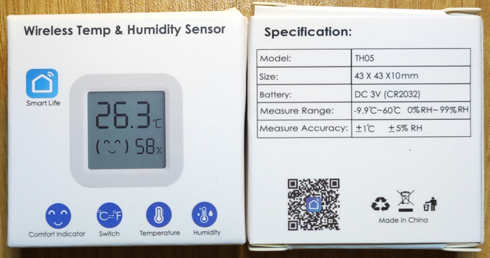
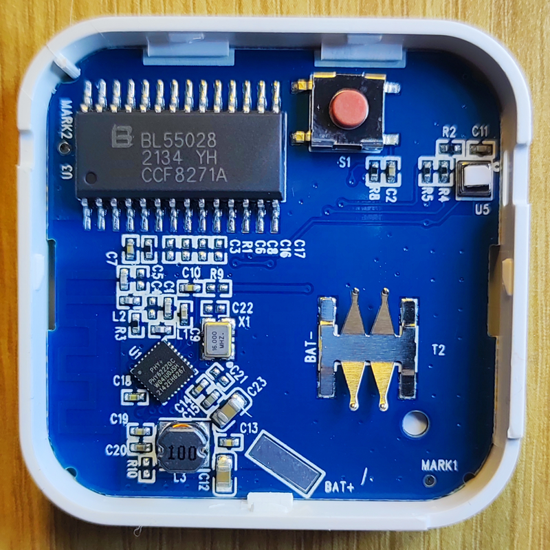
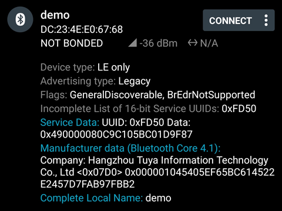
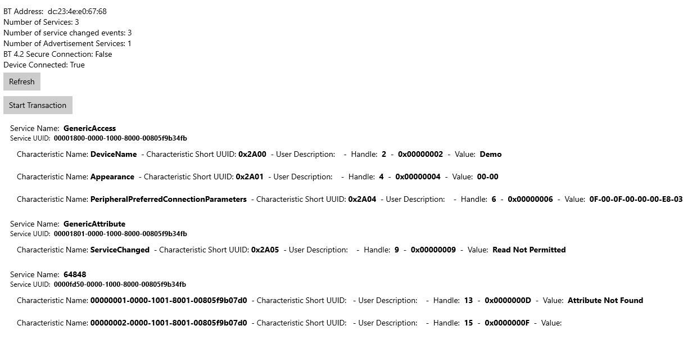
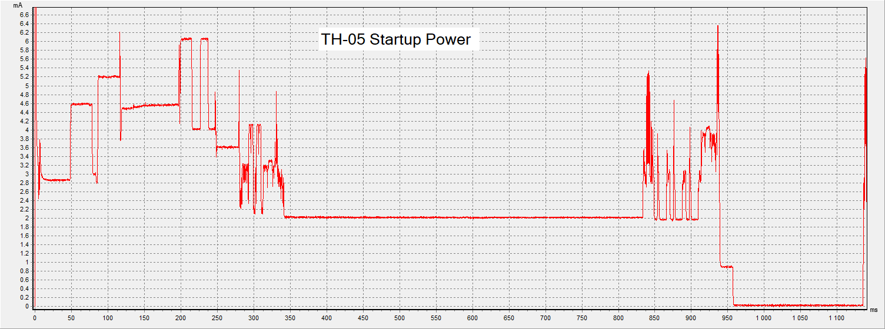
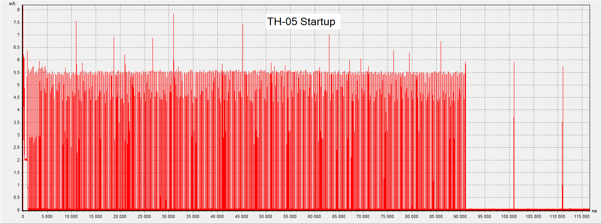
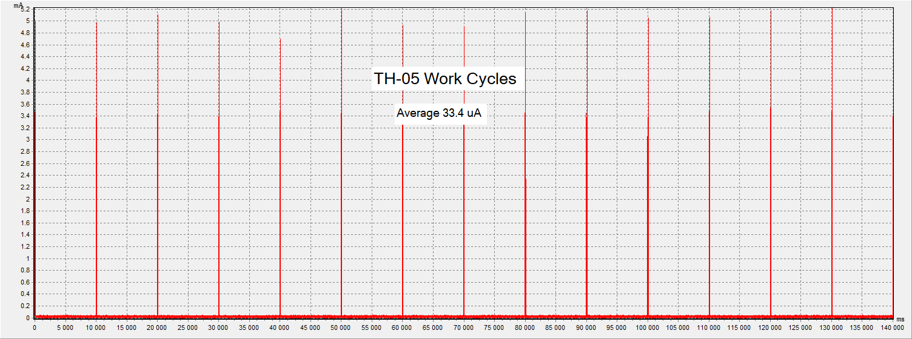
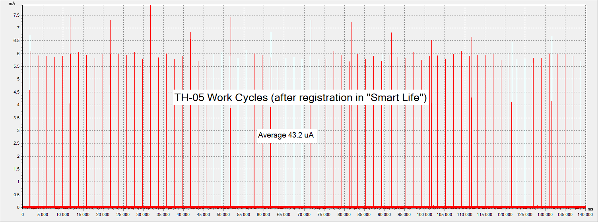
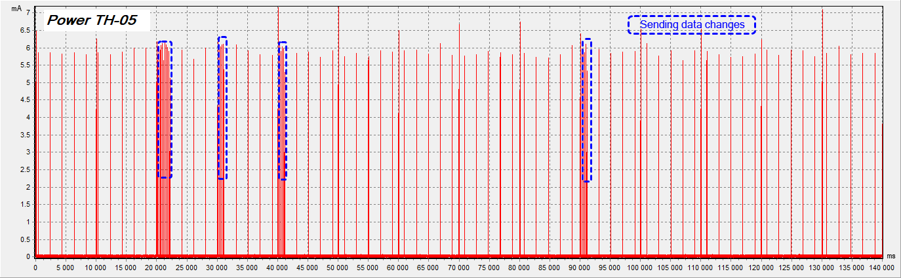
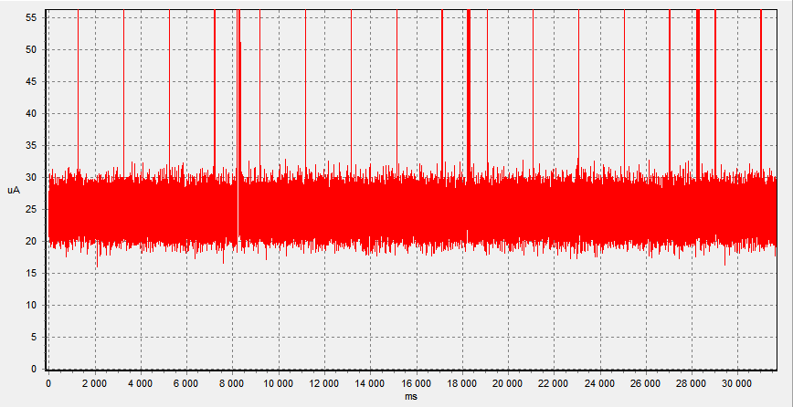

Wirelless Temp & Humidity Sensor, Model: TH05
SoC:
PHY6222QC-W04I, Q: 16MHz, Diver LCD:
BL55028, Sensor:
AHT20/AHT20-F
Manufacturer: ?
Bought here:
Aliexpress
Discussion


San Data ("nRF Connect"):

Tuya BLE developer, UUIDs:

When turned on, the thermometer waits for a connection and flashes the Bluetooth icon.
At this point, the average consumption is 0.3 mA.
After 91 seconds, the thermometer switches to the BLE advertising sending mode.


If no connection has been made, the thermometer switches to operating mode:

Work Cycles, after registration in "Smart Life":

When temperature or humidity changes, TH-05 transmits data to BLE advertising encrypted using the Tuya protocol.

Minimum chipset power consumption (sleep mode):
PHY6222QC-W04I - 13uA @ Sleep Mode with 32KHz RTC and all SRAM retention
BL55028 - 9 uA (sleep mode)
Sensor - 0.23/980 uA (sleep/measure)
Total: above 23 uA (A lot for CR2032. Half a year maximum?):

Other information about
PHY6222.